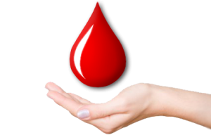

“Bring a life back to power. Make blood donation your responsibility”


“Bring a life back to power. Make blood donation your responsibility”
| {{ doner.Name }} | |
| {{ doner.BloodGroup }} | |
| {{ doner.City }} | |
| {{ doner.Email }} | |
| {{ doner.Phone }} |
| {{ request.Pname }} | {{ request.Pcity}} |
| {{ request.Pbloodgroup }} |
When required..
{{request.Cdate | date}} |
| Name: | {{ request.Cname }} |
| Phone: | {{ request.Ccontact }} |
| Email: | {{ request.Cemail }} |
| Hospital: | {{ request.Address }} |
| Doctor: | {{ request.Pdoctor }} |